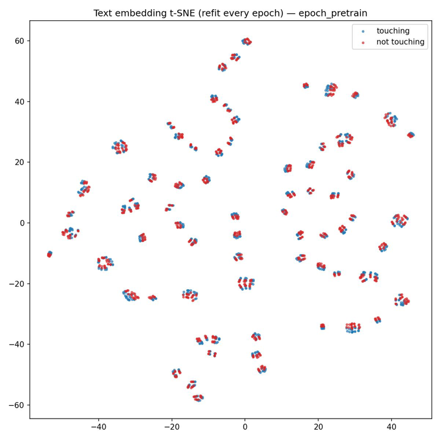
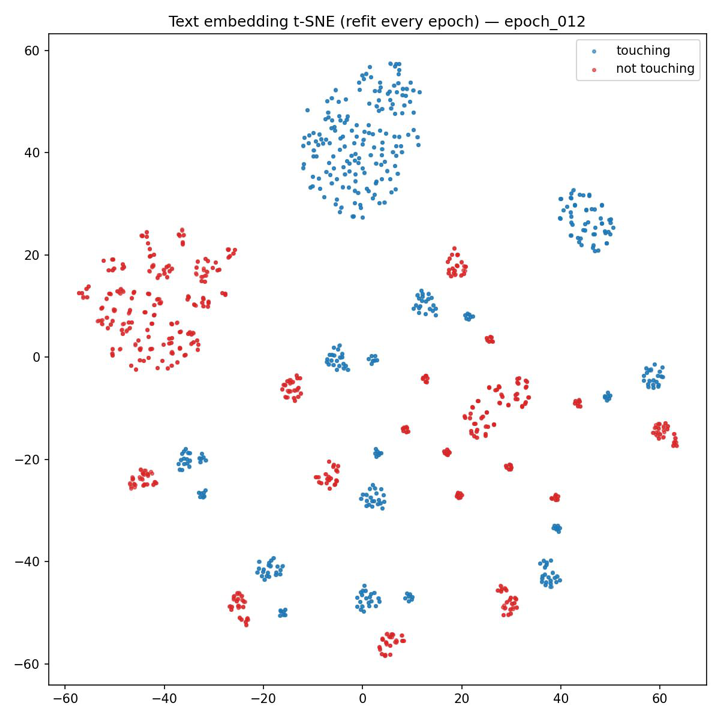

Research · University of Washington WEIRD Lab · Summer 2026
Cross-Modal Latent World Models
Robots that plan with a world model usually predict either future pixels, which wastes effort on lighting and texture, or future language through a large vision-language model, which is too slow to score thousands of candidate plans. The goal of this project was to get the best of both: a model that predicts only the task-relevant facts about the future (“the green block is touching the blue block”) in a compact latent space, so a planner can chase a natural-language goal without ever decoding text.
It works
0% → 60%task success rate in PyBullet simulation
What I did
- Designed the world model. A CLIP image encoder embeds the current camera frame, and an MLP conditioned on a candidate action sequence predicts the CLIP text embedding of what will be true
Hsteps later. I simplified the original proposal’s step-by-step latent dynamics into this direct multi-step prediction. - Trained it contrastively on language. I wrote a Python pipeline that turns expert simulation rollouts into (frame, action sequence, future frame) samples, labels each with a true future statement and several false ones (“Block A is touching Block B…”), and trains the model to pick out the true one. I later added random-exploration data so the model learned what happens when the robot drifts off course.
- Planned in latent space with MPPI. I implemented model predictive path integral control, which samples hundreds of action sequences, scores each by how closely its predicted future matches the encoded goal sentence, and executes the best one. Tuning the planner (iterations, temperature) mattered as much as the model, and together they took task success from 0% to 60%.
- Checked what the model learned. I trained models with 3B+ parameters and analyzed the embeddings with t-SNE/UMAP and linear probes, which confirmed that the predicted latents encode task facts like whether two blocks are touching.
Under the hood


before training
after 12 epochs